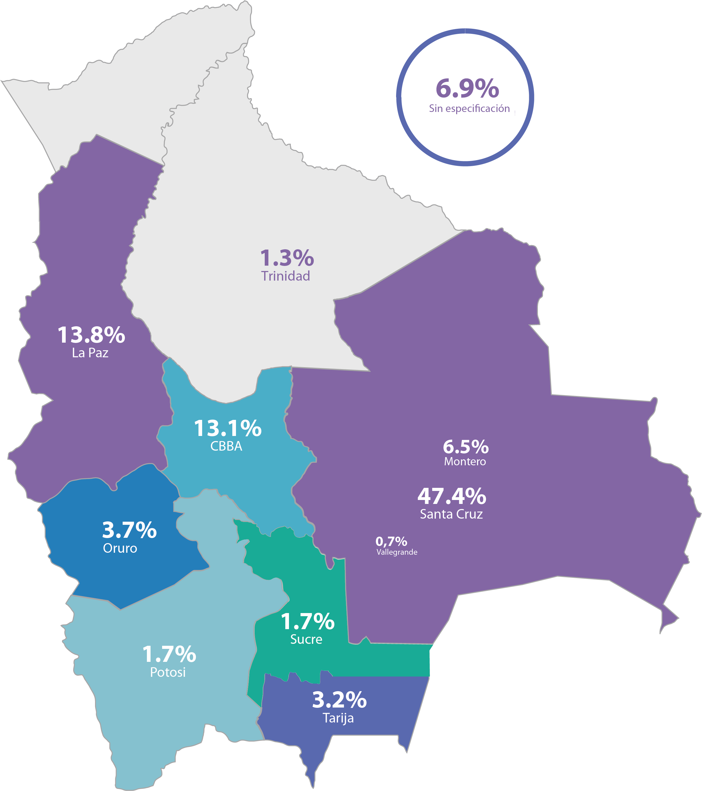

Tendencia diaria
Evolución de las métricas día a día.
Comparativo semanal
Totales por semana (Lunes a Domingo).
Distribución de KPIs
Participación de cada métrica en el período seleccionado.
Distribución por departamento (Bolivia)
Distribución de audiencia por departamento.

Distribución por país
Porcentaje de audiencia por país.
Rango de edad y género
Hombres, mujeres y total por rango de edad. Puedes activar / desactivar cada serie.
Páginas de interés de la audiencia
Principales páginas que también sigue tu audiencia en Facebook.
Detalle diario
Tabla con el desglose de cada día.